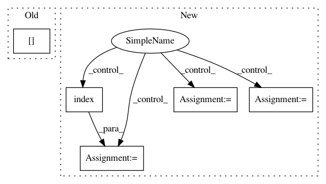

aa51e79cdbcbedbedeef68bcef646b2d43993753,src/sdk/pynni/nni/ppo_tuner/ppo_tuner.py,PPOTuner,_actions_to_config,#PPOTuner#Any#,492
Before Change
else:
chosen_arch[block_name][layer_name][key] = [act_name]
elif key == "chosen_layer":
chosen_arch[block_name][layer_name][key] = act_name
else:
raise ValueError("unrecognized key: {0}".format(key))
return chosen_arch
After Change
(_key, _type) = self.actions_to_config[cnt]
if _type == "input_choice":
if act_name == "None":
chosen_arch[_key] = {"_value": [], "_idx": []}
else:
candidates = self.search_space[_key]["_value"]["candidates"]
idx = candidates.index(act_name)
chosen_arch[_key] = {"_value": [act_name], "_idx": [idx]}
elif _type == "layer_choice":
idx = self.search_space[_key]["_value"].index(act_name)
chosen_arch[_key] = {"_value": act_name, "_idx": idx}
else:
raise ValueError("unrecognized key: {0}".format(_type))
return chosen_arch
In pattern: SUPERPATTERN
Frequency: 3
Non-data size: 5
Instances
Project Name: microsoft/nni
Commit Name: aa51e79cdbcbedbedeef68bcef646b2d43993753
Time: 2019-11-25
Author: Quanlu.Zhang@microsoft.com
File Name: src/sdk/pynni/nni/ppo_tuner/ppo_tuner.py
Class Name: PPOTuner
Method Name: _actions_to_config
Project Name: dmlc/gluon-nlp
Commit Name: 090944e816fd3ff8e861fba4452851e0a901491d
Time: 2019-01-28
Author: linhaibin.eric@gmail.com
File Name: scripts/language_model/large_word_language_model.py
Class Name:
Method Name: train
Project Name: microsoft/nni
Commit Name: 5d2a59fd4cf708d285d0db8ff3522c9156d2c4a9
Time: 2020-08-12
Author: 49771382+zheng-ningxin@users.noreply.github.com
File Name: src/sdk/pynni/nni/_graph_utils.py
Class Name: TorchModuleGraph
Method Name: unpack_manually